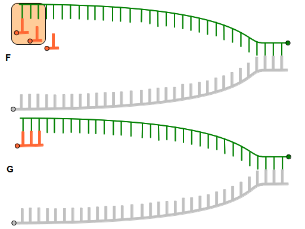

Leitstrang - Primer

Das Enzym
Primase
lagert mehrere (meist ca. 4 bis 12 Stück)
RNA-Nukleotide
ausgehend vom 3'-Ende des einen
ersten Vorlagen-DNA-Einzelstrangs
an (vgl. Abb.
F
), die zusammen den sogenannten "
Primer
" bilden (vgl. Abb.
G
).